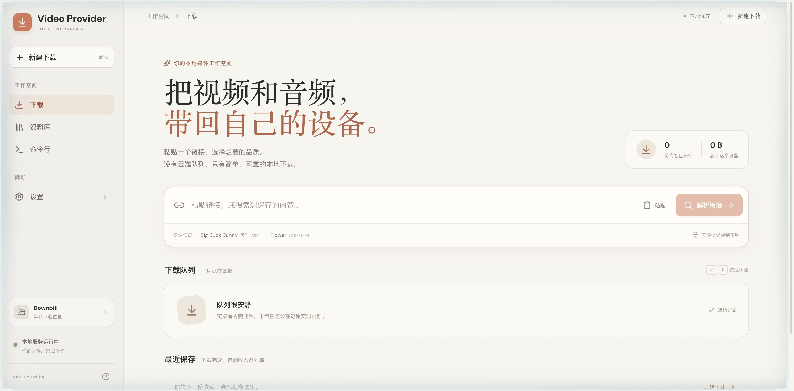
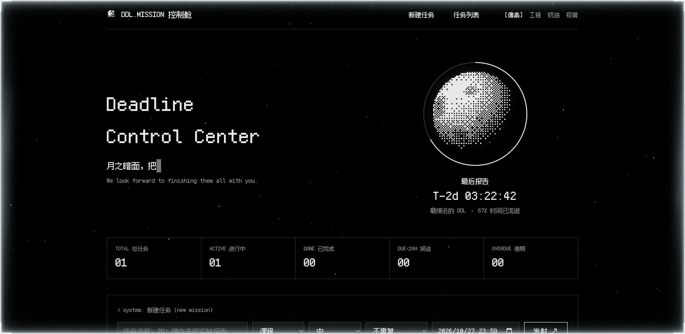
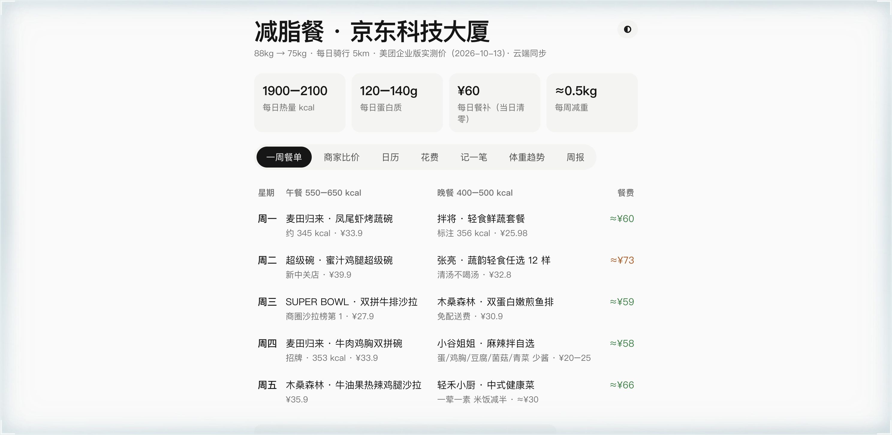

独立开发 · 本地媒体工具
Video Provider
把链接解析、直链多连接、HLS 分片、断点续传、资料库和 CLI 串成完整的本地下载流程。
100%公开视频源文件哈希一致
查看真实界面与验收案例 →
AI × HR × Developer Tools
六个项目案例，聚焦解决了什么问题、如何落地，以及最终带来了什么改变。
真实截图、官方示例、可重放流程

独立开发 · 本地媒体工具
把链接解析、直链多连接、HLS 分片、断点续传、资料库和 CLI 串成完整的本地下载流程。

Research Talent · 身份核验
从论文作者名单出发，完成身份消歧、资料补全和研究匹配，把名单变成可跟进的人才线索。
